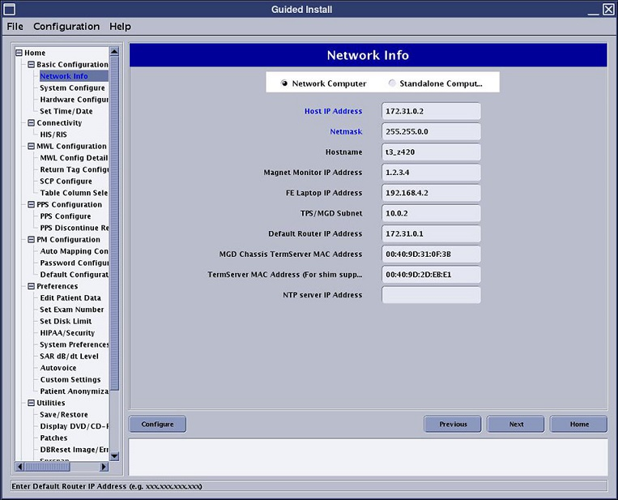
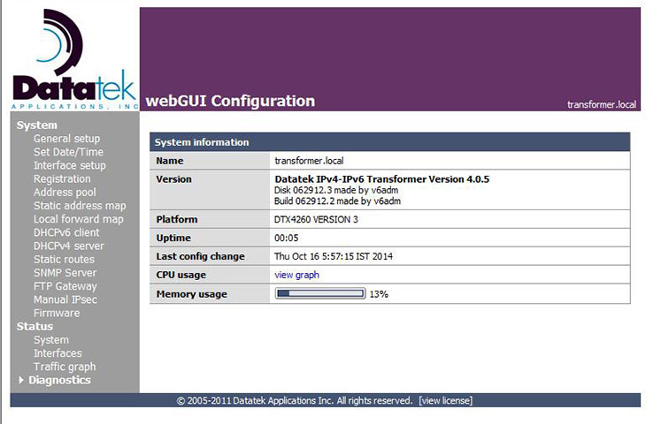

- Object ID: 00000018WIA30577640GYZ
- Topic ID: id_2014554 Version: 2.4
- Date: Aug 3, 2022 12:10:08 PM
Configuring the network
About this task
Procedure
- Open Guided Install.
- Select Network Info.
- Set the Host IP Address to 172.31.0.2.
- Set the Netmask to 255.255.0.0.
- Set Default Router IP Address to the IPv4-IPv6 transformer 172.31.0.1.Note
If the subnet 172.31.0.1 conflicts with the external subnet another subnet should be selected.
Make sure the IP addresses entered here do not conflict with the IP addresses already assigned to IPv4 and IPv6 devices in the client’s network.
- Click Configure.Note The Ethernet interfaces are dynamically named on systems with software revision 28 and later. Execute the ifconfig command to determine the name of the internal network interface, and use the name with the ethtool in the next step.
Figure 1. MR console network settings 
- Run the following command to make sure the eth0 interface of MR console has been configured with the address 172.31.0.2:Note The Ethernet interfaces are dynamically named on systems with software revision 28 and later. Execute the ifconfig command to determine the name of the internal network interface, and use the name with the ethtool in the next step.
{sdc@MRscanner ~} ifconfig eth0The following output indicates that the console was configured correctly:
inet addr:172.31.0.2 Bcast:172.31.255.255 Mask:255.255.0.0
- Run the following commands to access the /etc/hosts file:
{sdc@MRscanner} su -[enter root password]
[root@MRscanner ~] echo "172.31.0.1 IPv4-IPv6-Transformer" >> /etc/hosts[root@MRscanner ~] exitlog out
- Run the following command to connect to the IPv4-IPv6 transformer webGUI:
[sdc@MRscanner ~] firefox IPv4-IPv6-Transformer - Log in with the following credentials:
- Username: admin
- Password:
mono
Note The password can be changed under IPv4-IPv6-Transformer > System > General Setup
Note If you cannot connect to the IPv4-IPv6 transformer webGUI, see Setting the alternate initial configuration by serial console.After you log in, the transformer’s System Information screen displays.
Figure 2. System information 
- Save the password securely to be accessed by the customer or by the FE/Service in future.
- Click on the menu options displayed below System on the left side of the screen.